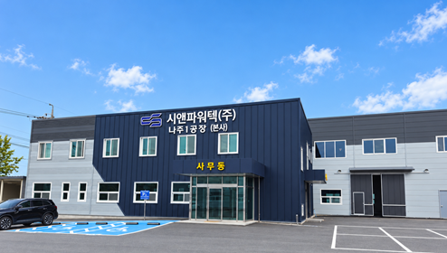
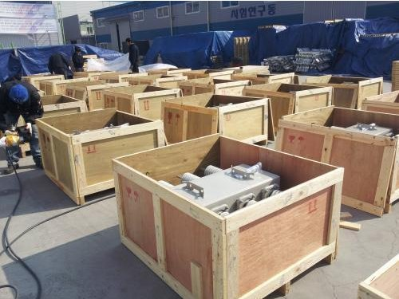

HOME / COMPANY
Company회사소개
C&P INC.
전력의 안정적인 흐름을 만드는 기술고객의 신뢰를 쌓아가는 기업
시앤파워텍은 개폐기와 변압기를 중심으로 배전 전력기기를 개발하고 생산하는 기업입니다.
전력은 산업을 움직이고 일상을 이어주는 필수 기반입니다. 시앤파워텍은 전력이 필요한 곳에 안전하고 안정적으로 공급될 수 있도록 배전 현장에 필요한 제품을 연구하고 생산해 왔습니다.
가공용·지중용 부하개폐기, 고장구간 자동개폐기, 주상·지상변압기 등 다양한 제품을 공급하며 한국전력공사와 민간 전력시장의 요구에 대응하고 있습니다.
화성과 나주의 생산 기반과 기술연구 역량을 바탕으로 제품의 설계부터 생산, 시험과 품질관리까지 이어지는 역량을 갖추고 있습니다. 공인시험과 현장 경험을 통해 제품의 신뢰성을 높이고, 납품 이후에도 고객의 목소리에 귀 기울이겠습니다.
앞으로도 에폭시 절연 개폐기와 고효율 변압기 등 변화하는 전력 환경에 필요한 제품을 확대하고, 국내에서 쌓은 기술과 경험을 바탕으로 해외시장으로 성장해 나가겠습니다.
기술과 품질로 신뢰를 쌓고, 안정적인 전력 공급과 지속가능한 미래에 기여하겠습니다.
Identity & vision기술과 품질로
기술과 품질로
전력의 신뢰를 만듭니다
배전 현장의 요구를 이해하고, 신뢰할 수 있는 제품으로 안정적인 전력 사용을 뒷받침합니다.
고객이 신뢰할 수 있는 전력기기를 공급하여 산업과 일상의 안정적인 전력 사용을 뒷받침합니다.
국내에서 쌓은 기술과 신뢰를 바탕으로 세계 전력시장에 기여하는 기업으로 성장합니다.
현장의 요구와 전력 환경의 변화에 맞는 제품을 개발합니다.
생산과 시험, 품질관리를 통해 신뢰할 수 있는 제품을 공급합니다.
제품 공급 이후에도 고객의 문의와 현장 요구에 대응합니다.
국내 시장에서 축적한 경험을 바탕으로 새로운 시장을 개척합니다.
Company overview
회사개요
시앤파워텍의 기본 정보와 주요 사업을 한눈에 확인할 수 있습니다.
- 회사명
- 시앤파워텍㈜
- 대표이사
- 오전열
- 설립연도
- 2013년
- 주요 사업
- 배전용 개폐기, 변압기 및 보호기기 개발·생산
- 본사·나주공장
- 전라남도 나주시 왕곡면 혁신산단5길 107
- 화성사업장
- 경기도 화성시 장안면 수촌길 119-8
- 주요 제품
- 부하개폐기, 고장구간 자동개폐기, 주상·지상변압기, 피뢰기 등
Core capabilities기술부터 품질관리까지,
기술부터 품질관리까지,
전력기기의 신뢰를 만듭니다
연구개발
배전 현장의 요구를 반영하여 제품과 기술을 개발합니다.
생산 기반
화성과 나주의 사업장을 기반으로 제품을 생산합니다.
시험·품질관리
시험설비 운영과 공정·출하검사를 통해 제품 품질을 관리합니다.
영업·고객지원
국내 고객과 소통하며 제품 공급 및 납품 이후의 문의에 대응합니다.
History
성장의 발자취
기술과 제품, 생산 기반을 확장하며 배전 전력기기 전문기업으로 성장해 왔습니다.
2013
회사 설립 및 개폐기 사업 기반 구축
2015
기업부설연구소 설립 및 생산 기반 확대
2016
계기용 변성기 제품 공급 및 관련 기술 확보
2024
시앤파워텍㈜으로 상호 변경, 나주 생산 기반 구축
2025
나주공장 증축 및 개폐기·변압기 관련 사업 확대
2026
벤처기업 확인 및 국내외 시장 확대 추진
Certification & testing품질과 기술에 대한
품질과 기술에 대한
객관적인 검증
시앤파워텍은 품질경영체계를 운영하고, 주요 제품에 대한 시험을 통해 제품의 성능과 신뢰성을 확인하고 있습니다.
ISO 9001 품질경영시스템
ISO 14001 환경경영시스템
ISO 45001 안전보건경영시스템
벤처기업 확인
에너지특화기업 지정
특허 및 디자인 등록 현황
주요 개폐기·변압기 공인시험 현황
Production bases두 생산거점을 바탕으로
두 생산거점을 바탕으로
고객의 요구에 대응합니다
나주와 화성의 생산 기반을 통해 제품 개발과 생산, 품질관리를 수행합니다.

Organization
조직 구성
각 부서가 제품 개발부터 생산, 품질관리와 고객 대응까지 협력합니다.
기술연구소
품질부
생산부
영업부
구매관리부